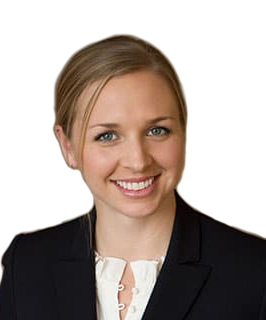

Meet Our Team
Craig Allison, Partner
(650) 351-7242 | callison@bdiplaw.com | Download vCard
Craig Y. Allison, Ph.D., litigates technically complex patent and trade secret disputes before the federal district courts, the International Trade Commission, and appellate courts. He also counsels clients on patent licensing negotiations, infringement allegations, and patent portfolio analysis. Dr. Allison has been selected for many years by Best Lawyers in America as a top lawyer in the area of Technology Law.
John Beynon, Partner
(650) 318-6775 | jbeynon@bdiplaw.com | Download vCard
John Beynon, Ph. D., assists clients in a wide range of technologies, including semiconductor packaging, humanized antibodies, quantitative PCR, computer memory (NAND Flash, SRAM and DRAM), and digital photography. In addition to patent litigation matters, he has represented clients in antitrust matters, contract arbitrations and disputes before the International Trade Commission. Dr. Beynon is also registered to practice before the USPTO, and has assisted clients with licensing negotiations, portfolio evaluations, and portfolio mining.
Henry Bunsow, Partner
(415) 426-4726 | hbunsow@bdiplaw.com | Download vCard
Henry Bunsow has over three decades of experience trying some of the most difficult and important patent and technology cases, and has built a reputation as one of the country’s top IP trial lawyers. He was recognized by the California Lawyer as Lawyer of the Year, and has received rave reviews from major legal commentators and his clients. He has tried over 40 cases to verdict. His clients refer to him as “a great lawyer” and a “force in the Courtroom” (Chambers rankings), and he has been ranked as a “Preeminent Lawyer,” “Top Lawyer,” and “Super Lawyer” for over a decade.
Hillary Bunsow, Attorney
(415) 426-4747 | hillarybunsow@bdiplaw.com
Hillary Bunsow is admitted to practice in California. Ms. Bunsow previously worked as a litigation associate and as an in-house transactional attorney. As a litigation associate with Gibson, Dunn & Crutcher LLP, Ms. Bunsow worked on state and federal employment; entertainment; breach of contract; civil rights; securities; patent, trademark, and copyright infringement; trade secrets; unfair competition; negligence; defamation and malpractice disputes. In addition, she worked on many pro bono matters, including an application for asylum, applications for domestic violence restraining orders, and formation of a non-profit organization as a 501(c)(3). As an in-house transactional attorney for Live Nation Worldwide, Inc. and Future Sight Entertainment, Ms. Bunsow worked on various transactions for live entertainment events and television programming.

Chris J. Coulson, Partner
(646) 502-6973 | ccoulson@bdiplaw.com
Chris Coulson is a patent attorney with experience in dispute resolution, licensing and transactional matters. Chris assists clients in resolving all manner of disputes, including Hatch-Waxman litigation, patent infringement litigation, proceedings before the U.S. Patent and Trademark Office, complex commercial litigation, and mediation. Chris has first-chaired numerous inter partes review (IPR) proceedings before the Patent Trial and Appeal Board of the United States Patent and Trademark Office.

Robin King Curtis, Partner
(415) 426-4740 | rcurtis@bdiplaw.com | Download vCard
Robin K. Curtis’s practice focuses on all aspects of complex technology litigation, from pre-filing investigation through appellate review. She has worked on numerous patent infringement, trademark and trade secret litigation cases. Robin has worked on matters involving a variety of technologies, including cellular phone user interface and operating systems, CMOS image sensors, biometrics, multiple encryption methodologies, mobile ad hoc networking (MANET), network traffic management, and other wireless and telecommunications technologies covering WiFi, 802.11 and 3GPP standards. Robin has argued at claim construction and evidentiary hearings, managed case teams and discovery, and has taken and defended numerous depositions. She has also conducted pre-acquisition due diligence and advised global clients on intellectual property related considerations in mergers and acquisitions.

Denise De Mory, Managing Partner
(650) 351-7241 | ddemory@bdiplaw.com | Download vCard
Denise De Mory is the Managing Partner of Bunsow De Mory and has litigated patent and other intellectual property cases for over twenty years. She has repeatedly been named one of California’s “Top Women Litigators” by The Daily Journal. Denise has significant trial experience, including a patent trial that resulted in a $61 million verdict for her client. She was also a member of the United States Department of Justice’s trial team, in the U.S. v. Microsoft antitrust litigation. Denise deposed executive-level Microsoft witnesses and the chief architect of Internet Explorer, and offered one of the government’s technical experts at trial.
Christina M. Finn, Partner
(650) 351-7247 | cfinn@bdiplaw.com | Download vCard
Christina holds a degree in computer science, and specializes in complex litigation, including intellectual property and related matters. She has litigated technology-related contract disputes, as well as patent and trademark disputes. She has extensive experience in all areas ranging from pre-filing investigation through trial.

Vernon C. Grigg III, Special Counsel
(415) 426-4742 | vgrigg@bdiplaw.com
Vernon C. Grigg III has practiced law in the San Francisco Bay Area for over 20 years. He started his career in San Francisco as law clerk to former Chief Judge of the Northern District of California, Judge Thelton Henderson. Prior to clerking for Judge Henderson, Vernon also had clerked for sitting Supreme Court Justices in Israel and South Africa.
Dino Hadzibegovic, Partner
(415) 426-4735 | dhadzibegovic@bdiplaw.com | Download vCard
Dino Hadzibegovic is a partner at Bunsow De Mory. His practice focuses on patent portfolio analysis, patent enforcement programs and patent infringement cases. He has represented plaintiffs and defendants in cases related to mobile platform architectures, semiconductors, wireless technology and telecommunication standards, satellite programming transmissions, network security and airline booking systems. Mr. Hadzibegovic also has extensive experience working with standard essential patents and FRAND related issues. Mr. Hadzibegovic has been involved in all aspects of litigation from portfolio analysis and pre-filing investigations through trial and post-trial motions. He is a registered patent attorney.
Aaron Hand, Partner
(650) 351-7244 | ahand@bdiplaw.com | Download vCard
Aaron is a techie at heart, as his practice reflects. He has experience litigating patents cases in a wide array of technologies, and has participated in several trials. He has also litigated trade secret disputes, and helped unravel an engineer’s attempted cover-up of trade secret theft and wrongful solicitation — contributing to a massive arbitration award exceeding $500 million. He has also advised clients in reporting and responding to vulnerability reports and Computer Fraud & Abuse Act claims. Aaron has been recognized as a SuperLawyers Rising Star for several years. Aaron is a Certified Information Privacy Professional (CIPP/US).

Letitia Lee, Attorney
(650) 351-7245 | llee@bdiplaw.com
Letitia Lee’s practice focuses on intellectual property litigation, especially patents and trade secrets. She has experience with a variety of technologies, including those relating to computer software, biomedical devices, microbiology, and pharmaceutical products. She also has experience prosecuting patents, assisting with inter partes reviews, and advising on patent strategy. When providing patent counseling and strategy, Letitia leverages her experience in patent litigation, patent prosecution, and knowledge gained from working at the United States Patent and Trademark Office.
Nicholas Mancuso, Attorney
(650) 351-7242 | nmancuso@bdiplaw.com
Nick Mancuso is admitted to practice in California and Oregon. His practice focuses on intellectual property law, specializing in patent litigation. He has also worked on various copyright, trademark, and trade secret matters, and in pro bono matters involving unlawful detainer actions and international copyright disputes.
Lauren Robinson, Partner
(650) 351-7243 | nlrobinson@bdiplaw.com
Lauren focuses her practice on technology litigation, primarily patent litigation and related strategic counseling. Lauren is experienced in all stages of litigation, including several trials, as well as practice before the Patent Trial and Appeal Board. She also provides product counseling and assists clients with internal and external communications surrounding legal issues and technology disputes. Lauren is recognized as a Super Lawyers Rising Star.

Michael N. Zachary, Partner
(415) 426-4745 | mzachary@bdiplaw.com
Michael focuses his practice on intellectual property litigation and licensing, and regularly represents clients in patent infringement, trade secret, trademark and other intellectual property litigation cases. He also counsels clients on a variety of technology and intellectual property agreements, including design and development, manufacturing and supply, product evaluation, and patent and trademark license agreements. He has represented large, mid-size, and start-up companies based in the United States, Japan and Europe, including Volkswagen, Bradium, Skype, Amazon, Wacom, PRISM Pharma and Boston Scientific. In 2016 and 2017, he was recognized as a California “IP Star” by Managing Intellectual Property.